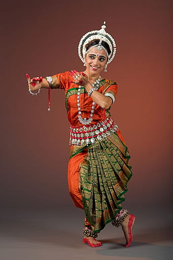

ODISSI

Odissi is indigenous to Orissa in eastern India. It is predominantly a dance for women, with postures that replicate those found in temple sculptures. Based on archaeological findings, odissi is belived to be the oldest of the surviving Indian classical dances. Odissi is a very complex and expressive dance, with over fifty mudras (symbolic hand gestures) commonly used.